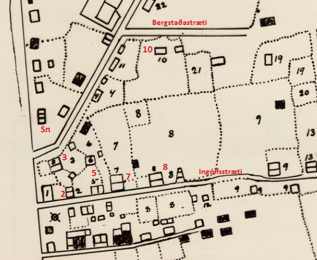

um 1880
Kort frá um 1880 sem sýnir götur og hús í Þingholtum á þeim tíma. Vinstra megin á myndinni lóðrétt er Bankastræti og Laugavegur í framhaldi, en hliðargötur sem sjást eru Þingholtsstræti, Ingólfsstræti og Skólavörðustígur.
Ingólfsstrætisbæir eða efri Þingholtsbæir eins og þeir voru gjarnan nefndir var torfbæjaröð sem stóð þar sem nú er Ingólfsstræti auk nokkurra bæja í næsta nágrenni. Um 1850 voru eftirfarandi torfbæir á þessu svæði: Bjarg (2), Stafn (5), Ofanleiti (7) og Grímsbær (8) við Ingólfsstræti. Skaptabær (3) á horni Bankastrætis og Skólavörðustígs, Snússa (Sn) við Laugaveg 4 og Bergstaðir (10) við Bergstaðastræti.
Á þessari teikningu frá 1880 hefur húsum fjölgað töluvert frá því sem var um 1850, en sum þeirra húsa eru gripahús eða skemmur. Steinhús og timburhús eru merkt með fylltum ferningum.
